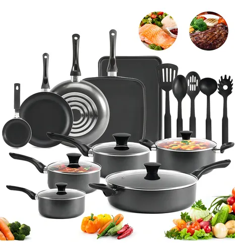

Cómo evitar que el teflón se raye: Mi experiencia con la batería Orfeld (Otra Opcin)

Todos hemos estado ahí: compras un sartén hermoso, negro, inmaculado. Haces tu primer hotcake y resbala como en pista de hielo. Estás feliz. Pero tres semanas después, notas una pequeña línea plateada en el fondo. Luego otra. De repente, tu sartén parece que fue atacado por un gato y todo se le pega. Es frustrante.
La durabilidad del antiadherente es el dolor de cabeza número uno en las cocinas modernas. Para poner a prueba esta situación, decidimos analizar la Batería de Cocina Orfeld Ng3sss de 20 piezas. Nos enfocamos no solo en lo que trae la caja, sino en cómo se comporta su recubrimiento tras semanas de uso diario y, más importante aún, en compartirte la técnica exacta para que no la arruines.
La primera impresión del set Orfeld
Al abrir la caja de la Orfeld, nos encontramos con un diseño bastante sobrio y elegante en color negro mate. A diferencia de otras baterías que meten accesorios inútiles para abultar el número de piezas, las 20 piezas de este set están bastante bien pensadas para cocinar de verdad. Los sartenes tienen un buen peso; no se sienten como si se fueran a doblar con mirarlos feo, lo cual es un problema común en rangos de precios similares.
El grosor del aluminio es el adecuado para retener un poco más el calor que las baterías hiper-delgadas, lo que te permite lograr un mejor dorado en carnes o pollo sin que se te quemen los bordes por calentamiento disparejo.
Consulta las promociones actuales de esta batería en línea
Ver disponibilidadEl secreto que nadie te dice para cuidar el antiadherente
El recubrimiento de la Orfeld es bueno, pero no es mágico. Ningún teflón de este rango de precio sobrevivirá si cometes los tres "pecados capitales" de la cocina. Aquí te compartimos cómo hemos mantenido nuestros sartenes Orfeld impecables tras un mes de pruebas rigurosas:
- 1. El choque térmico es tu peor enemigo: Nunca, bajo ninguna circunstancia, tomes el sartén caliente de la estufa y lo pongas bajo el agua fría del grifo. Esto causa micro-fisuras invisibles en el teflón, que en un par de días se convertirán en burbujas y desprendimientos. Déjalo enfriar sobre la estufa apagada antes de lavarlo.
- 2. El fuego alto es innecesario: El aluminio de esta batería transfiere el calor maravillosamente. Si usas fuego máximo, quemarás el recubrimiento. Acostúmbrate a cocinar a fuego medio o bajo; tus alimentos se harán igual de rápido, no se pegarán, y salvarás la vida útil del sartén.
- 3. Muerte al metal: Usa espátulas de silicona (son mejores que las de nylon, que pueden derretirse en los bordes) o madera. El tenedor de metal para voltear la carne es el asesino silencioso de tus ollas.
Lo que debes considerar de la Orfeld
Hablando específicamente del producto, nos gustaron mucho los mangos remachados. Aportan una seguridad tremenda al momento de manipular una olla llena de agua hirviendo. Muchos modelos baratos usan mangos atornillados que terminan aflojándose a los 15 días.
El lado negativo: La parte externa (la base) tiende a mancharse si hay derrames de aceite que se queman con la flama de la estufa, y tallar esa zona es difícil porque no quieres dañar la estética negra. Además, aunque dice ser apta para lavavajillas, te recomendamos encarecidamente lavarla a mano. Los detergentes de lavavajillas son muy abrasivos y comerán el brillo y la antiadherencia a largo plazo.
Nuestra Veredicto
La batería de 20 piezas de Orfeld ofrece una excelente solidez para su rango de precio. Si aplicas las reglas de cuidado de antiadherente que mencionamos arriba, este set puede durarte muchísimo tiempo en excelentes condiciones.
Nos parece una opción más robusta y "adulta" que los sets hiper-básicos. Es ideal para familias pequeñas o parejas que ya cocinan de manera regular y necesitan piezas confiables que no los dejen tirados a mitad de una receta. Si respetas el teflón, la Orfeld respetará tus desayunos.